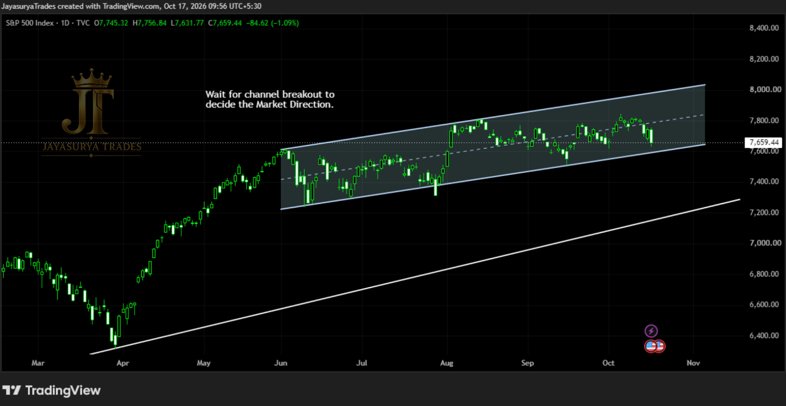

For this Saturday Market Focus, I am looking at the S&P 500. In last week's Saturday Market Focus, we discussed that the market was moving inside a parallel channel and that we needed to wait for a breakout to help determine the next direction. The market is still moving within that channel.
Today, an ascending trendline remains below the parallel channel. Until price breaks out of the channel and confirms a direction, I will continue to wait rather than make an early decision about where the market will move next.
Current structure: Parallel channel remains in place
Additional structure: Ascending trendline below the channel
Key decision: Confirmed breakout above or breakdown below the parallel channel
Approach: Wait for the channel break and observe price action

Current Market Structure
The S&P 500 is still moving inside the parallel channel identified in the previous Saturday Market Focus. The key development is that the market has not yet broken out of this pattern. The ascending trendline below the channel is also an important part of the structure to monitor if price moves down.
For now, the next direction remains unconfirmed. I will wait for price to break above or below the channel and then assess the price action before deciding which scenario is becoming more relevant.
Scenario 1 — Breakdown Below the Channel
If the S&P 500 breaks below the lower boundary of the parallel channel, a downside move could develop toward the ascending trendline below it. This is a scenario to watch only if the breakdown is confirmed by price action.
If price moves down toward the ascending trendline, I will observe how the market reacts there. The trendline may act as support, but that response cannot be assumed in advance. The market's behaviour at that area will be important for assessing what happens next.
Scenario 2 — Breakout Above the Channel
If the S&P 500 breaks above the upper boundary of the parallel channel and confirms the breakout, the market could continue its upward movement. In that case, the breakout would provide the next technical signal to assess for potential bullish continuation.
I will not treat price approaching the channel top, or briefly moving above it, as confirmation by itself. The focus remains on a clear break and the market's price action around the channel boundary.
The Ascending Trendline Below the Channel
The ascending trendline below the parallel channel is important in the downside scenario. If price breaks below the channel and moves toward this trendline, I will wait to see how price behaves when it reaches that area.
If the trendline holds and price responds upward, a possible bullish move could develop from that area. If the trendline does not hold, the market structure will need to be reassessed based on the new price action. Neither outcome should be assumed before the market reaches the level and shows its response.
What I Will Watch Next
At the Upper Boundary
I will watch for a confirmed break above the parallel channel. If the breakout is confirmed, the potential continuation of the upward move becomes the scenario to assess.
At the Lower Boundary
I will watch whether price breaks below the parallel channel. If a breakdown is confirmed, a downside move toward the ascending trendline below the channel could develop.
At the Ascending Trendline
If price reaches the ascending trendline, I will observe the market's reaction before considering whether support is holding or the structure is changing further.
Key Takeaways
- The S&P 500 remains inside the parallel channel discussed in the previous Saturday Market Focus.
- The market has not yet confirmed its next direction through a channel breakout.
- A confirmed break above the channel could support continued upward movement.
- A confirmed break below the channel could lead to a downside move toward the ascending trendline below it.
- The ascending trendline may act as support, but the market's reaction must be observed.
- Wait for the channel break and price-action confirmation before deciding which scenario to follow.
For now, the S&P 500 remains inside the parallel channel. I will wait for the market to break above or below the pattern, then assess the confirmed move. If price breaks down, the ascending trendline below the channel will be the next area to watch.
Wait for the channel breakout.
Observe the market's response.
Confirm before deciding the direction.
One day. One market. One focused analysis.
Levels. Structure. Scenarios. Confirmation.
No hype. Just how the market behaves.
Watch. Wait. Confirm.
Risk Disclaimer
This analysis is provided for educational and informational purposes only and
should not be considered financial advice or a recommendation to buy or sell
any financial instrument.
Trading involves substantial risk. Always conduct your own research and follow
your own trading plan and risk-management rules.